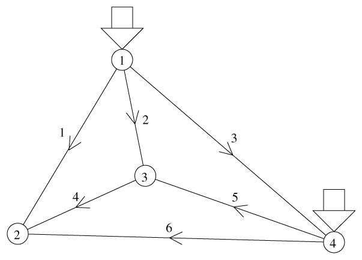
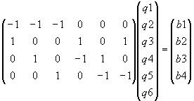
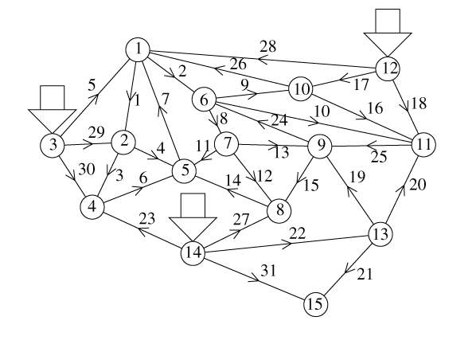
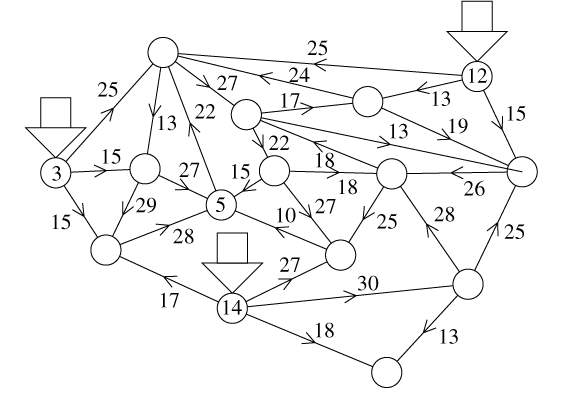
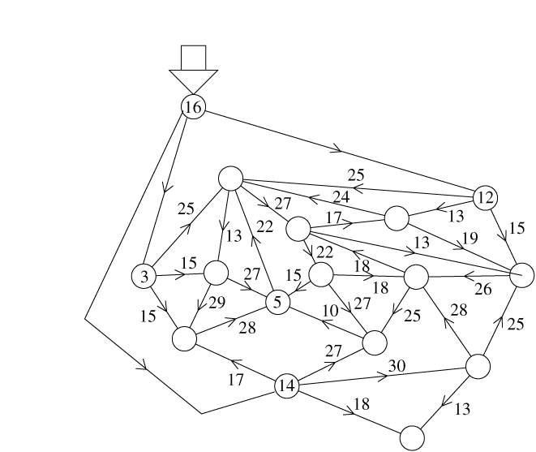
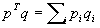
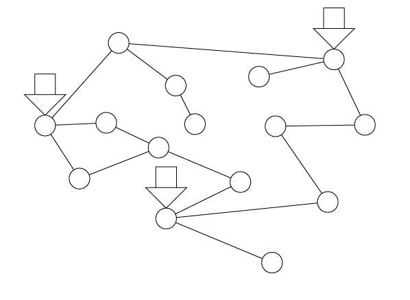
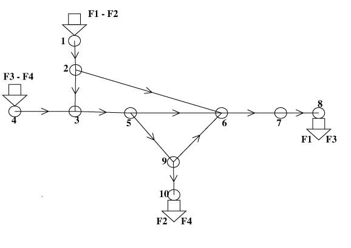

Tous ces articles en ligne sur Scilab ont été écrits pour
LINUX MAGAZINE FRANCE par les
développeurs du Scilab Group. Les articles sont sous
licence FDL (Free Documentation
Licence)
Graphes et réseaux avec Scilab, la boîte
à outils Metanet
Deuxième partie
Claude Gomez Maurice Goursat
Nous avons vu dans la première partie comment manipuler les graphes, les
visualiser et résoudre les problèmes standards de graphes. Nous
avons dit que les graphes sont la structure sous-jacente de base pour les
problèmes de réseaux et c'est à la résolution de
problèmes de réseaux que nous allons nous intéresser
maintenant.
Les réseaux occupent une place considérable dans notre vie
quotidienne ; ils sont indispensables par ce qu'ils nous apportent : il en est
ainsi des réseaux dits de service c'est-à-dire l'eau, le gaz,
l'électricité, le chauffage urbain et le téléphone.
Nous utilisons aussi les réseaux de transport : train, bus, métro
et surtout le réseau routier qui est à la fois indispensable et
à l'origine de soucis quotidiens dans les grandes agglomérations.
Il y a évidemment aussi d'innombrables problèmes de
réseaux dans des domaines techniques variés : ordinateurs,
distribution et de plus en plus les télécommunications sous
diverses formes.
Dans leur modélisation les problèmes sur les réseaux
dépendent du problème physique et de la nature du trafic. Il
existe cependant des lois de base et quelques grandes classes de
problèmes types que nous allons illustrer ici.
1 Se mettre au courant (électrique)
Notre premier exemple est une version très simplifiée du
problème de production électrique. On considère le
réseau national de très haute tension. Les noeuds du
réseau représentent les régions qui sont des noeuds de
consommation et les centrales (nucléaires, thermiques, hydrauliques) qui
sont les noeuds de production. On désigne en général les
noeuds de consommation par noeuds sources, les noeuds de production par noeuds
puits et les noeuds qui sont de simples jonction des lignes sans consommation
ou production noeuds de transit.
On va supposer pour simplifier que les coûts de production sont
identiques sur tous les sites et que le coût de transport est le
même sur tous les arcs. Le problème est le suivant : calculer les
quantités d'électricité à produire dans les
différentes centrales en minimisant le coût de transport. De plus,
on doit respecter deux contraintes : les capacités de transport des
lignes du réseau et les capacités de production des centrales
sont limitées. Bien évidemment une condition nécessaire
pour obtenir une solution est que la capacité totale de production soit
supérieure à la demande totale. Si ce n'est pas le cas (cela
s'est déjà produit lors d'hivers très rigoureux) on
résout le problème en réalisant du délestage et en
rajoutant un coût du délestage.
Ce problème simplifié (la réalité est beaucoup plus
complexe) est résolu quotidiennement pour de multiples raisons : les
coûts de production varient en fonction du type de centrale, une centrale
peut être arrêtée pour maintenance, des lignes peuvent
être détruites (ce fut le cas lors des dernières
tempêtes) mais la raison permanente vient du fait que la demande est
dynamique. Il y a en effet de très fortes variations saisonnières
mais aussi de fortes variations horaires avec les pointes du matin et du
soir.
Dans notre cas on ne va prendre en compte que ce que l'on appelle la
première loi de Kirchhoff, dite loi des noeuds : la somme des
entrées dans un noeud est égale à la somme des sorties du
noeud.

Figure 1: Un petit réseau électrique
Par exemple si l'on prend le réseau très simple de la figure
Figure 1, nous avons deux régions de consommation (noeuds 2 et 3) et
deux régions qui sont à la fois de production et de consommation
(noeuds 1 et 4). Si qi est le
flot sur l'arc i et si bi
est la consommation (l'inverse de la production) au noeud i la loi des
noeuds s'écrit donc :
| noeud 1 : |
-q1 -
q2 - q3=b1 |
| noeud 2 : |
q1 +
q4 + q6=b2 |
| noeud 3 : |
q2 -
q4 + q5=b3 |
| noeud 4 : |
q3 -
q5 - q6=b4 |
On peut écrire ces équations sous la forme matricielle :

On a donc :
où q (flot d'électricité sur les arcs) est le
vecteur des qi, b
(consommation ou demande, inverse de la production) est le vecteur des
bi et A est la matrice
d'incidence noeuds-arcs du graphe : la colonne i représente l'arc
i ; si cet arc va du noeud k au noeud l on trouve un -1
sur la ligne k et 1 sur la ligne l. C'est ce système
d'équations qui définit le flot d'électricité dans
le réseau.
1.1 Quelle quantité d'électricité peut-on
consommer ?
Les lignes électriques ont des capacités maximales. Ceci
s'exprime par : C_min £q £C_max où le vecteur Cmax représente les capacités
maximales des lignes et le vecteur Cmin représente les capacités
minimales des lignes. Dans notre cas tous les Cmin sont nuls.
Les lignes ayant des capacités de transport maximales, la valeur
maximale du flot électrique que l'on peut faire passer d'un noeud
à un autre noeud est limitée.
On considère par exemple le réseau de la figure Figure 2
où les noeuds 3, 12 et 14 sont des noeuds de production
d'électricité (centrales) et tous les autres noeuds sont des
noeuds de consommation (villes par exemple). On peut se demander par exemple
quelle est la capacité maximale du flot électrique que l'on peut
faire arriver à un noeud de consommation donné, par exemple le
noeud 5. Pour cela, il faut calculer le flot maximal que l'on peut faire passer
de chaque noeud de production vers le noeud 5.

Figure 2: Le réseau électrique avec affichage des numéros
des noeuds et des arcs
On charge d'abord dans Scilab le graphe considéré qui se trouve
dans le fichier edf.graph :
g=load_graph("edf.graph");
Ce graphe a pu être créé par exemple à partir de la
fenêtre graphique de Metanet ou à partir de Scilab (voir la
première partie).
Ensuite, on définit les capacités minimales et maximales des arcs
que l'on range dans les éléments de la liste g
prévus pour ça :
Cmin=zeros(1,31);
g("edge_min_cap")=Cmin;
Cmax=[13 27 29 27 25 28 22 22 17 13 15 27 18 10 25 19 13 15 28..
25 13 30 17 18 26 24 27 25 15 15 18];
g("edge_max_cap")=Cmax;
Sur la figure Figure 4 on voit le réseau avec les capacités
maximales des arcs affichées.

Figure 3: Le réseau électrique avec affichage des
capacités maximales des arcs
On va calculer le flot maximal des noeuds de production 3, 12 et 14 vers le
noeud 5. On utilise pour cela la fonction max_flow à
laquelle on donne le noeud de départ, le noeud d'arrivée et le
graphe :
-->q3=max_flow(3,5,g)
q3 =
55.
-->q12=max_flow(12,5,g)
q12 =
38.
-->q14=max_flow(14,5,g)
q14 =
45.
Mais cela ne nous donne pas la consommation maximale que l'on peut
réaliser au noeud 5. En effet, on ne peut pas simplement ajouter les
valeurs que l'on a obtenues car les flots venant des trois noeuds de production
sont partagés sur les arcs. Pour calculer cette consommation maximale au
noeud 5 il faut créer ce que l'on appelle un graphe
aumenté : on va rajouter un noeud ; ce noeud aura trois arcs
sortant, chacun joignant un des noeuds de production (3, 12 et 14). Les
capacités maximale de ces trois arcs seront prises infinies (par exemple
1000) car ils ne jouent aucun rôle sur la capacité, ils ne sont
là que pour transformer les trois noeuds de production en un seul. Le
réseau obtenu est sur la figure Figure 4.

Figure 4: Le réseau électrique augmenté avec affichage des
capacités maximales des arcs
Il suffit de charger à nouveau ce graphe dans Scilab et de refaire le
calcul du flot maximal du nouveau noeud 16 au noeud 5 :
-->gaug=load_graph("edfaug.graph");
-->q=max_flow(16,5,gaug)
q =
80.
On voit donc que compte tenu des capacités des arcs, on ne pourra de
toute façon pas consommer plus de 80 au noeud 5. Ce résultat
n'est a priori pas évident à obtenir.
Noter que la fonction max_flow peut donner aussi en retour la
valeur du flot sur tous les arcs, mais nous n'en avons pas besoin ici.
1.2 Gagner des sous avec Metanet
Une fois que l'on se donne la production et la consommation,
c'est-à-dire le vecteur b de l'équation il faut faire
passer le flot électrique sur les arcs. Mais il n'y a pas un seul
chemin. Comment choisir ? Hé bien nous allons minimiser le coût du
transport (pertes sur les lignes, coût d'entretien et d'amortissement des
lignes). À chaque arc i est associé un coût
pi et donc le coût total
de transport peut s'écrire donc de façon linéaire :

D'autres types de coûts peuvent bien sûr être
envisagés, par exemple des coûts quadratiques ou même plus
compliqués.
Nous reprenons toujours le même réseau et nous nous donnons
maintenant la valeur des consommations (appelées aussi demande)
bi en chaque noeud et la valeur
du coût qi en chaque arc :
b=[7 10 -35 11 9 11 8 12 9 5 7 -40 8 -30 8];
g("node_demand")=b;
p=ones(1,31);
g("edge_cost")=p;
Pour simplifier nous avons pris un coût constant égal à 1
sur chaque arc. On remarque que les valeurs négative de b
correspondent aux noeud de production 3, 12 et 14.
Il ne reste plus qu'à utiliser la fonction ad hoc de Metanet pour
réaliser le calcul. C'est min_lcost_flow2 :
-->[c,flo] = min_lcost_flow2(g)
flo =
column 1 to 11
! 0. 19. 0. 4. 6. 4. 0. 8. 0. 0. 0. !
column 12 to 22
! 0. 0. 1. 0. 0. 5. 15. 1. 0. 0. 9. !
column 23 to 31
! 0. 0. 8. 0. 13. 20. 14. 15. 8. !
c =
150.
qui nous donne le flot flo sur chaque arc ainsi que la valeur
du coût minimal égal ici à 150. On se rend compte dans cet
exemple très simple que certains arcs ne servent à rien, ce sont
ceux pour lesquels le flot est nul. On peut les obtenir en faisant :
-->anul=find(flo==0)
anul =
column 1 to 11
! 1. 3. 7. 9. 10. 11. 12. 13. 15. 16. 20. !
column 12 to 15
! 21. 23. 24. 26. !
Il pourrait alors être économique de supprimer tous les arcs qui
ont un flot nul. Pour cela on construit la matrice à deux colonnes
ij dont chaque ligne correspond à un arc que l'on veut
détruire sous la forme [noeud de tête, noeud de queue]. Ensuite on
n'a plus qu'à utiliser la fonction delete_arcs qui prend
en argument cette matrice ij et donne le nouveau réseau
:
i=0
for a=anul
i=i+1; ij(i,1)=g("tail")(a); ij(i,2)=g("head")(a);
end
g2=delete_arcs(ij,g);
On peut voir ce nouveau réseau sur la figure Figure 5.

Figure 5: Le réseau électrique avec les seuls arcs utiles
Autre méthode
Mais Scilab est plein de ressources. Nous avons résolu le
problème précédent en le considérant comme un
problème d'optimisation de coût dans un réseau. On peut
aussi le considérer comme un problème d'optimisation
linéaire standard. Pour cela on écrit le problème sous la
forme matricielle :
c'est-à-dire que l'on cherche q qui minimise pTq sous les deux contraintes
Aq=b et 0 £ q
£ Cmax. Dans le jargon des optimiseurs, ceci
s'appelle un problème de programmation linéaire et il
peut être résolu par la fonction linpro de Scilab.
Pour cela il faut d'abord obtenir la matrice A à partir du graphe
:
A=graph_2_mat(g,"node-arc");
A=full(A);
graph_2_mat qui permet d'obtenir le résultat retourne
une matrice sous une forme spéciale appelée creuse qui
ne stocke que les éléments non nuls et full
permet d'obtenir une matrice standard.
Il n'y a plus qu'à utiliser linpro avec les arguments
qu'il faut en faisant attention au signe et au fait qu'il ne faut ici que des
vecteurs colonnes :
[flo2,lagr,c2]=linpro(p',A,-b',Cmin',Cmax',15);
-->flo2',c2
ans =
column 1 to 11
! 0. 19. 0. 4. 6. 5. 0. 8. 0. 0. 0. !
column 12 to 22
! 0. 0. 0. 0. 0. 5. 15. 1. 0. 0. 9. !
column 23 to 31
! 1. 0. 8. 0. 12. 20. 14. 15. 8. !
c2 =
150.
et le flot est obtenu dans flo2 et le coût dans c2
.
On voit que le coût minimal c2 vaut 150 comme avec la
première méthode mais qu'en revanche le flot obtenu flo2
n'est pas le même que le flot flo
calculé par la première méthode.
Mais alors, quel est le résultat qui est juste ? Hé bien les deux
! En effet, il n'y a pas de solution unique pour un tel problème. On
peut simplement voir que la première méthode est plus
précise en vérifiant que la contrainte Aq=b est
mieux respectée :
-->norm(A*flo'+b')
ans =
0.
-->norm(A*flo2+b')
ans =
3.493E-14
Il faut donc préférer la première méthode.
2 Autres problèmes de réseaux
Nous avons vu qu'il était facile de résoudre des problèmes
de réseaux et de flots avec Scilab et Metanet. Bien sûr nous ne
vous avons montré qu'un aperçu des types de problèmes que
l'on peut rencontrer et encore sous une version simplifiée.
Il existe cependant toute une gamme de problèmes très
intéressants et pas faciles à résoudre. En effet,
considérons pour terminer le problème du transport dans une
agglomération, problème crucial dans la région parisienne
avec ses bouchons quasi-permanents. Retenons simplement un réseau
partiel, celui des grands axes (celui que l'on voit sur le site Web Sytadin)
avec les entrées et sorties correspondantes. La demande ou consommation
de ce réseau est en fait fournie par une grande matrice appelée
matrice origines-destinations qui pour chaque entrée ventile
les entrants sur les sorties qu'ils vont prendre. Dans ce cas un flot est
représenté par les automobilistes qui vont d'une entrée
i à une sortie j. Il y a donc autant de flots que de
couple (entrée,sortie) certains de ces flots étant nuls. La
difficulté vient du fait que contrairement à l'eau et à
l'électricité ces flots ne se mélangent pas : nous avons
un problème de multiflots.

Figure 6: Croisement autoroutier
On peut illustrer cette difficulté en prenant le réseau
très simple de la figure Figure 6 qui est censé
représenter un croisement de deux autoroutes avec des alternatives sur
les points d'entrée :
- les véhicules arrivant du nord (noeud 1) vont aller à l'est
(noeud 8) et au sud (noeuds 10) ;
- les véhicules venant de l'ouest vont faire la même chose mais
il faut connaître les flots respectifs sur les parties communes pour
résoudre le problème !
L'automobiliste qui est pris dans un embouteillage, qui est arrivé dans
cette situation en suivant les indications du système de navigation de
son véhicule et qui utilise son téléphone portable est une
bonne illustration du pire et du meilleur des réseaux. Il est sur un
réseau qui a été sans doute bien calculé : le
réseau routier. Il a un outil qui a un algorithme parfait pour lui
trouver le chemin le plus court (en temps) dans le graphe où il se
trouve : le système de navigation. Et pourtant il est dans une situation
insoluble et il utilise un autre formidable réseau, celui des
télécommunications, pour continuer à travailler ou avertir
d'autres personnes. Les problèmes de réseaux s'entrecroisent donc
et ne font que commencer...
Contacts
Site Web de Scilab : http://www-rocq.inria.fr/scilab
Serveur ftp : ftp://ftp.inria.fr/INRIA/Scilab
Adresse email : Scilab@inria.fr
Newsgroup : comp.soft-sys.math.scilab
This document was translated from LATEX
by HEVEA.